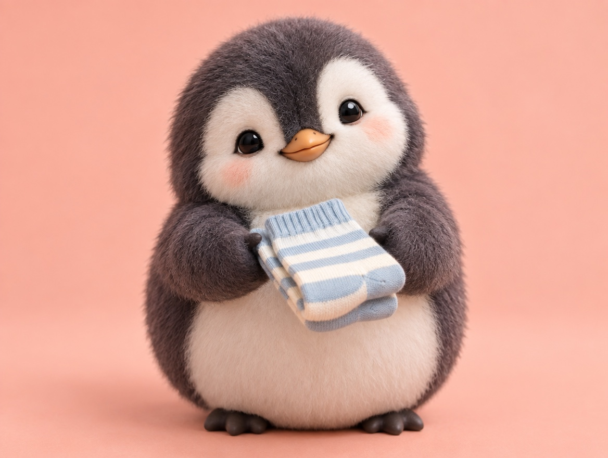

🧪 LAB · 試作 — AIが読書メモから一気に作った記事です。本番の一覧には出していません · 試作の一覧
🐧 EVERYDAY LIFE⚡ 42 SEC
Start with "I" instead of "you," and your request is easier to hear 💬

Sound Familiar
Have you ever asked for something, and the other person got upset?
The Point
When you ask for something, try starting with "I," not "you."
The Reason
This is because when you start with "You…," the other person feels blamed and tries to protect themselves.
With "It helps me if…," you are only telling your own feeling, so it is easier for them to take.
⚡ TRY IT
"You" or "I"? Pick your words
1/3
Socks are on the floor again.
Loud music late at night.
Your friend is late again.
…?
"Why are you so angry?!" 💢
"Oh, sorry! I will do it!" 💗
Which way will you say it? Tap one.
💡 Try the "I…" way next time.
🎯 3 out of 3! Starting with "I" works like magic.
🙂 Good! Start with "I" every time.
💥 So many fights… Try the "I…" side!
For Example
For example, instead of "Put away your socks!", say, "It helps me if you put them in the washing machine."
To a friend who is often late, say, "I worry, so I want a message."
Try This
Next time you ask for something, try to put "I" at the start before you say it.
In Short
Even with the same request, it is heard in a very different way.
📚 I wrote this from my reading notes.